Hello and welcome.
My name is Amber Anderson - a graphic designer currently located in Orange County, California.
Most robust in illustration, drawing, and photography.
BA in Visual Communication Design from Eastern Washington University.
Creator of the web comic called Dapper Immortal.
Also: unashamed nerd and former band geek that still has a love of music.
Table-top gamer and a chainmailler to boot.
PDF Resume available on Dropbox
Where to find me elsewhere on the web:
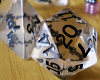
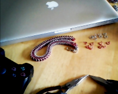
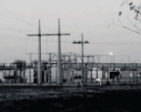
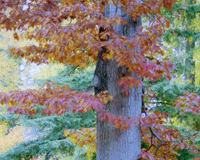
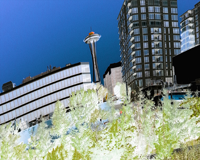
/* Photography */
HDR photography. Used Photoshop to converge the dark and light shots together, and turn it into a black and white photo.
Looking at perspectives and reflections with a stout and a beer list hanging on the wall at a brewery.
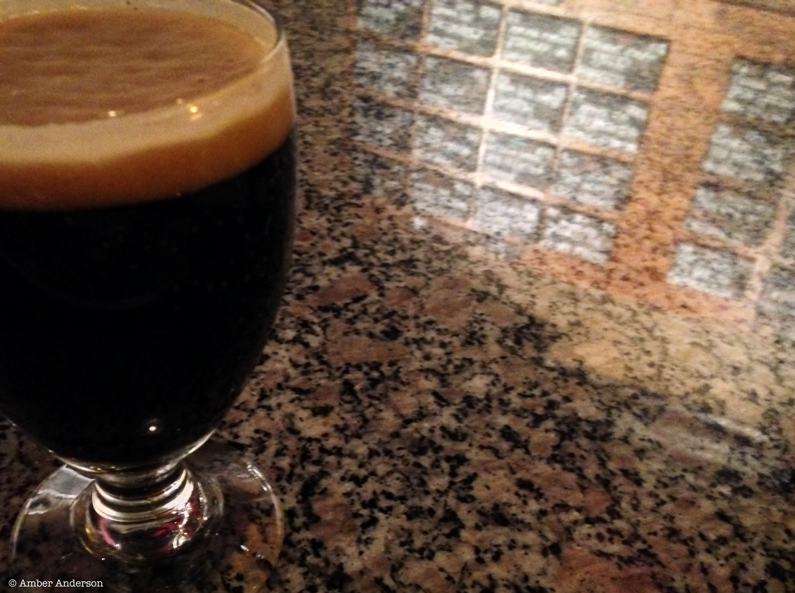
/* Illustration */
Vector illustration of Black Widow Steampunk motorcycle. [Adobe Illustrator]
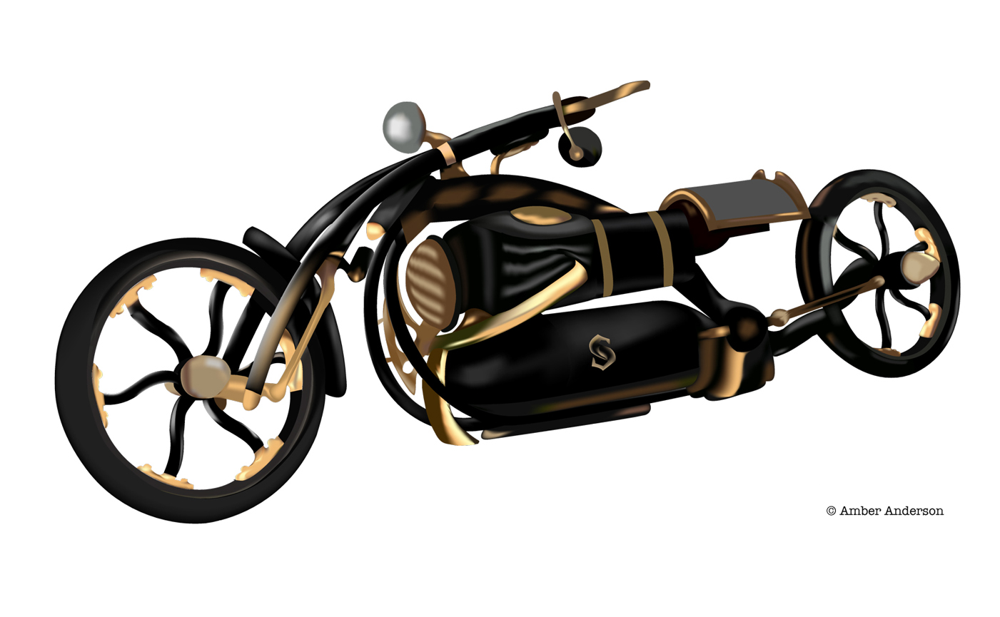
Original web comic about a vampire stick figure named Dapper Immortal.
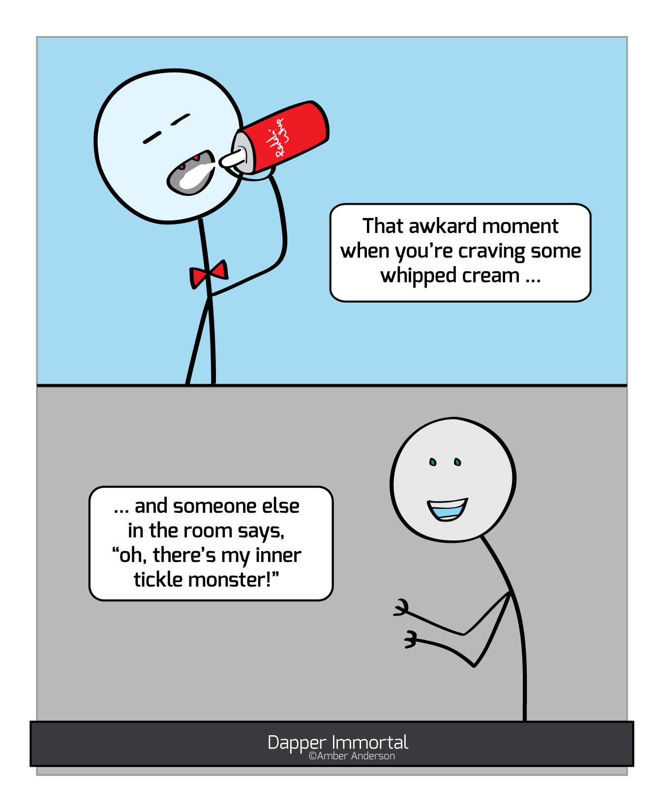
/* Identity and Branding */
The Senior Capstone for my degree, the identity standard for a Spokane, WA animal shelter. This was a group project, and I was in charge of stationary.
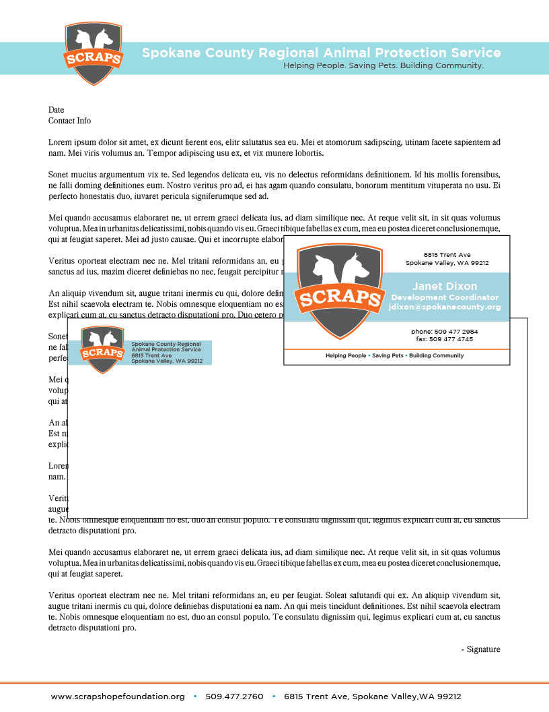
/* Editorial Design */
A zine I created about the presence of gender in clothing marketing. Created it as final project for a 400-level class I studied for my Communications minor.
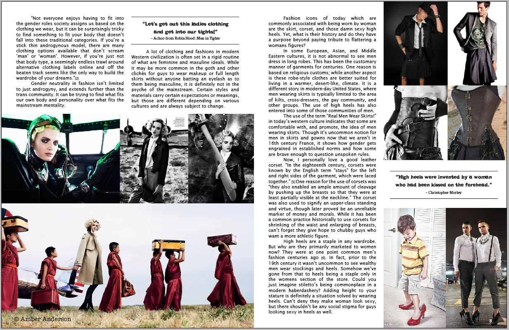
A magazine exercise I did for my senior portfolio class at university.
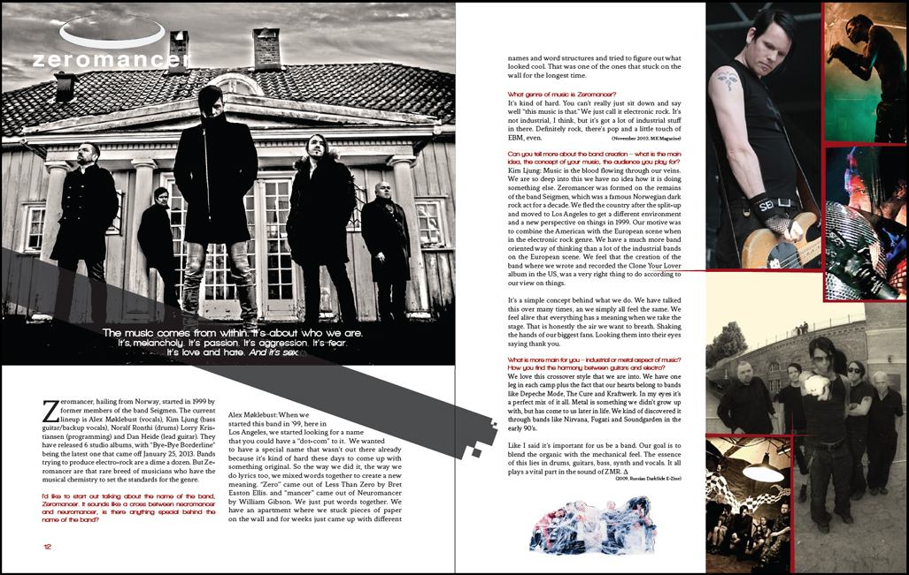
/* Non-Digital Art */
One-hour abstract piece using the idea of wings. [pencil and charcoal]
Commissioned painting inspired by French cafés. [acrylic]
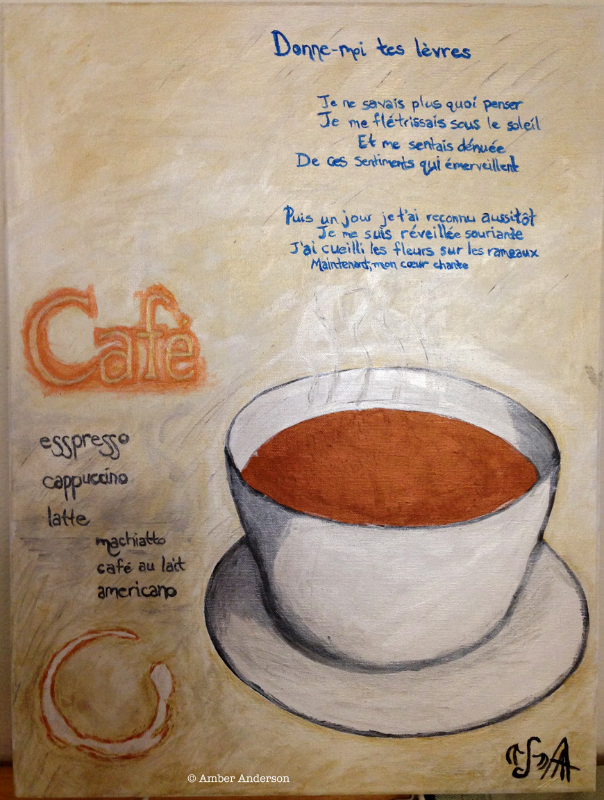